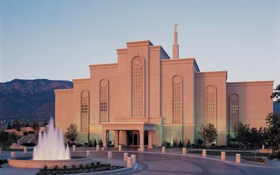
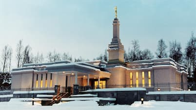
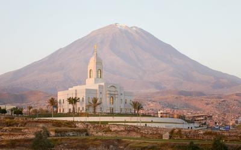
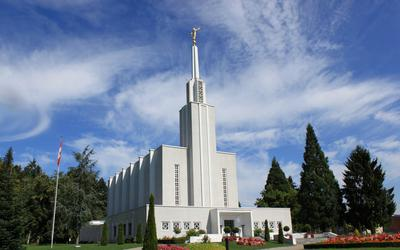
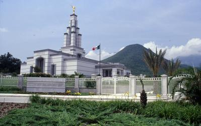
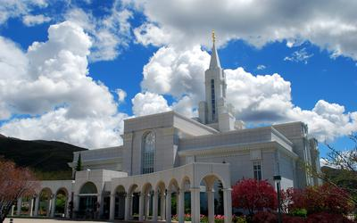

Temple Album
Home
Old
New
Large
Small
Home
Aba Nigeria Temple
Adelaide Temple

Albuquerque Temple

Anchorage Alaska Temple
Apia Samoa Temple

Arequipa Peru Temple

Ber Switzerland Temple

Monterrey Mexico Temple

Bountiful Utah Temple